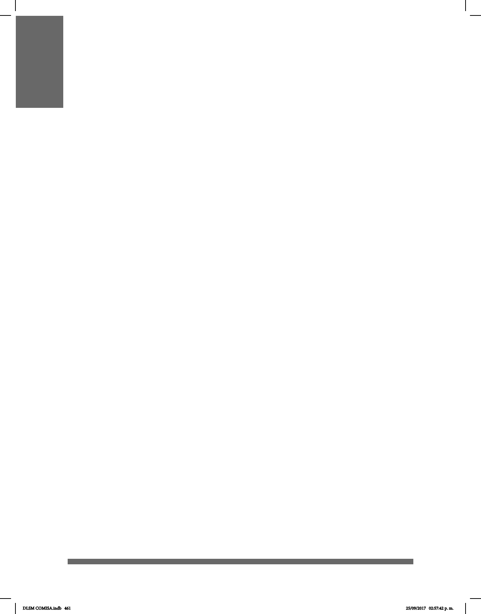

461
APÉNDICE 2. LISTA DE ABREVIATURAS
#
+
/
“ ”
¡ !
[ ]
Adj.
adv.
ASL
BSL
CDMX
conj.
DIELSEME
interj.
LSE
LSF
LSM
prep.
pron.
SIGN
SIPSA
sust.
Un signo de número (#) indica que la seña es un préstamo en
deletreo manual.
Un signo de más entre las palabras de la glosa se utiliza para las
señas compuestas y contracciones.
Una barra entre palabras de la glosa se utiliza cuando una seña
tiene dos equivalentes distintos en español.
Las comillas alrededor de las palabras indican que existe un gesto
que acompaña a la seña.
Los signos de exclamación se utilizan para dar énfasis; la seña
muestra énfasis.
Los corchetes indican que una seña es opcional, no es
indispensable en la oración.
Adjetivo.
Adverbio.
American Sign Language, Lengua de Señas Americana, se
conserva ASL para no confundir el término LSA Lengua de
Señas Argentina.
British Sign Language, en español Lengua de Señas Británica.
Ciudad de México.
Conjunción.
Diccionario Español - Lengua de Señas Mexicana realizado por la
SEP.
Interjección.
Lengua de Signos Española.
Lengua de Señas Francesa.
Lengua de Señas Mexicana.
Preposición.
Pronombre.
Seña.
Sin Parentesco con un Sordo Adulto.
Sustantivo.
DLSM COMISA.indb 461 25/09/2017 02:57:42 p. m.